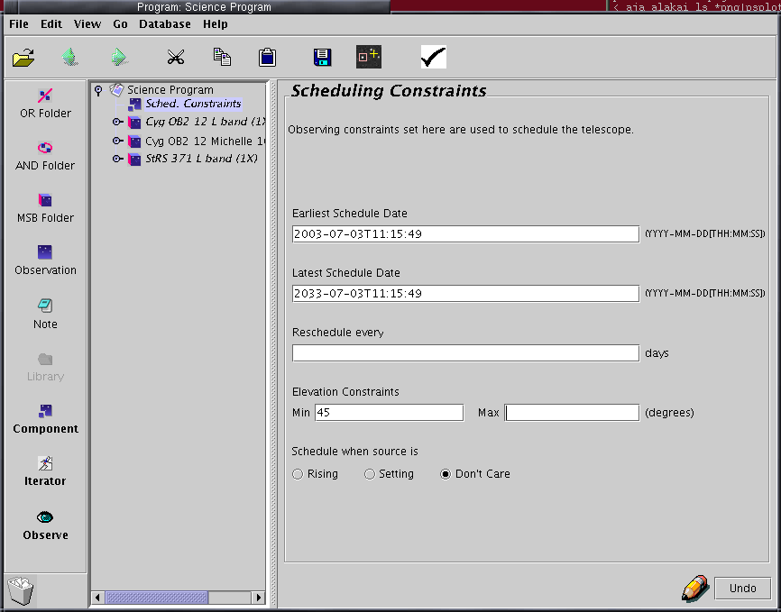

THE SCHEDULING CONSTRAINTS
COMPONENT
|

|
The scheduling constraints component allows you to:
- specify a specific time window in which you want your
observations to be taken. Needless to say setting this too narrowly
will
reduce your chances of being scheduled, so only do this if there is a
valid scientific reason. NOTE that dates and times in this component
are UT, not HST.
- set a rescheduling action, that will schedule an MSB that has
been completed to reappear after a certain number of days. If you have
been allocated time for a project that requires periodic monitoring,
you may wish to ask us for more information on how this works.
- by default, a target is considered observable if it is within
the
UKIRT observable limits for the entire duration of the MSB. If you wish
to specify a lower elevation criterion (eg. for a very low declination
source) you may do so here.
- restrict a target to being observed only before or after
transit.
Again, note that this criterion will be applied for the entire
estimated
duration of the MSB, so only do this if it is scientifically vital.
